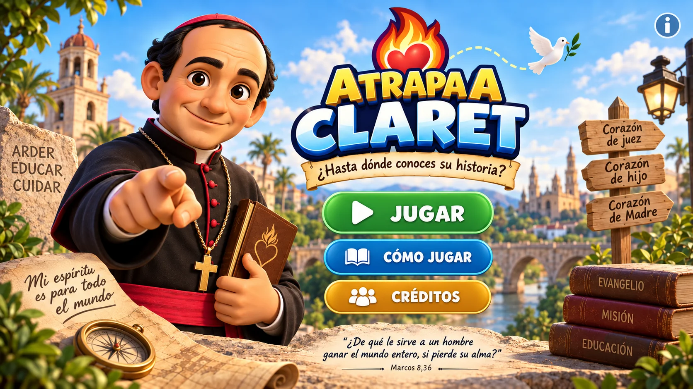

5 fases
Recorre la vida y el legado de Claret en cinco etapas.

Recorre la vida y el legado de Claret en cinco etapas.
Consigue 5 respuestas correctas para superar cada fase. No tienen que ser consecutivas.
Cada error hace perder una vida. Con el tercer fallo termina la partida.
50:50, Pista y Cambio de ruta. Cada uno puede usarse una sola vez por partida y solo uno por pregunta.
ATRAPA A CLARET
¿Hasta dónde conoces su historia?
Versión profesional v0.3.6 PWA · 79 preguntas
FASE 1 DE 5
Tu reto: consigue 5 aciertos antes de perder los 3 Corazones de María.
FASE SUPERADA
Has conseguido 5 aciertos.
«Procura por todos los medios encender a todo el mundo en el fuego del divino amor.»
FIN DE LA PARTIDA
Has llegado hasta la Fase 1.
Lograste llegar al nivel inicial.
«Más buen partido se saca del andar con dulzura que con aspereza y enfado.»
¿Quieres volver a intentarlo?
HAS ATRAPADO A CLARET
¿Hasta dónde conoces su historia? Hasta el final.
«Enamoraos de Cristo y haréis cosas grandes.»
Ayúdanos a ampliar Atrapa a Claret. La propuesta será revisada antes de incorporarse al banco oficial.
Se abrirá tu aplicación de correo para revisar y enviar la propuesta. No incluyas datos personales del alumnado.